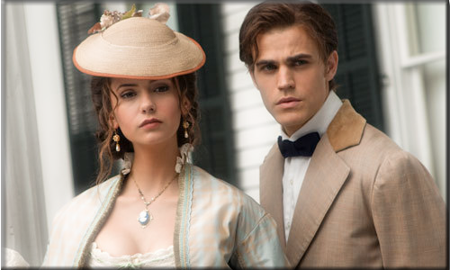

1ª Temporada

Na cidade de Mystic Falls, Virginia, Elena Gilbert (Nina Dobrev)
uma adolescente de 17 anos, acaba de perder os pais em um acidente
de carro. Ela e o irmão, Jeremy Gilbert (Steven R. McQueen) vão
morar com a tia, Jenna Sommers (Sara Canning), na antiga casa de
seus pais. Ao retornarem as aulas, Elena se apaixona por um
vampiro chamado Stefan Salvatore (Paul Wesley), com quem viverá
aventuras intensas durante todos os episódios.
Mas as suas vidas se tornam mais e mais complicadas,
pois o irmão de Stefan, Damon Salvatore (Ian Somerhalder) retorna
à cidade com sede de vingança contra seu irmão. Ambos acabam se
apaixonando por Elena, principalmente por causa de sua semelhança
com o seu amor do passado, Katherine Petrova (Nina Dobrev).
Bonnie Bennett (Katerina Graham) uma bruxa, que é a melhor amiga
de Elena, tenta ficar afastada de tudo que envolve vampiros,
mas no final sempre acaba tendo que ajudá-los.
Ir para GUIA PRIMEIRA TEMPORADA